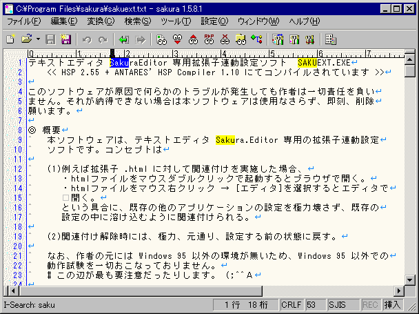

インクリメンタルサーチについて
インクリメンタルサーチは、1文字入力するごとに随時検索して、検索対象をすばやく見つけることのできる機能で、現在位置から前方なら下、後方なら上に向かって検索できます。(sakura:1.5.0.0以降)
インクリメンタルサーチは下記のコマンドで使用できます。
・前方インクリメンタルサーチ
・後方インクリメンタルサーチ
・正規表現前方インクリメンタルサーチ
・正規表現後方インクリメンタルサーチ
・MIGEMO前方インクリメンタルサーチ
・MIGEMO後方インクリメンタルサーチ
■使い方
ショートカットキーか、メニューから選択して、インクリメンタルサーチを実行します。
インクリメンタルサーチモードになり、ステータスバーに「I-Serch:」と表示されます。そのままの状態で、探したい文字列を入力すると、随時検索してくれます。
(インクリメンタルサーチでは、ダイアログは表示されません。:-)
「TAB・逆TABインデント」は、TAB扱いになります。「SPACE・逆SPACEインデント」は、SPACE文字扱いになります。また「カーソル前を削除」は、インクリメンタルサーチの文字列が一文字削除されます。
インクリメンタルサーチモードを解除したいときは、カーソルを移動したり「各種モードの取り消し(ESC)」など、上記以外のコマンドを実行してください。

■Migemoについて
Migemoとは、ローマ字のままアルファベット・日本語をインクリメンタルサーチできる機能です。
例えば、「桜」を検索したい場合は「sak」「sakur」等で目的の場所に移動できます。
詳しい説明は、http://namazu.org/~satoru/migemo/に書いてあります。
サクラエディタは行をまたぐ検索ができません。
■Migemoの設定
C/Migemoのバイナリをhttp://www.kaoriya.netからダウンロード
サクラエディタだけで使う方はmigemo.dllとdictディレクトリをsakura.exeと同じ場所に置いてください。
他のソフトと共有する等の理由で別の場所に置く場合は、共通設定 『支援』プロパティでパスを指定してください。また、BREGEXP.DLLも必要です。